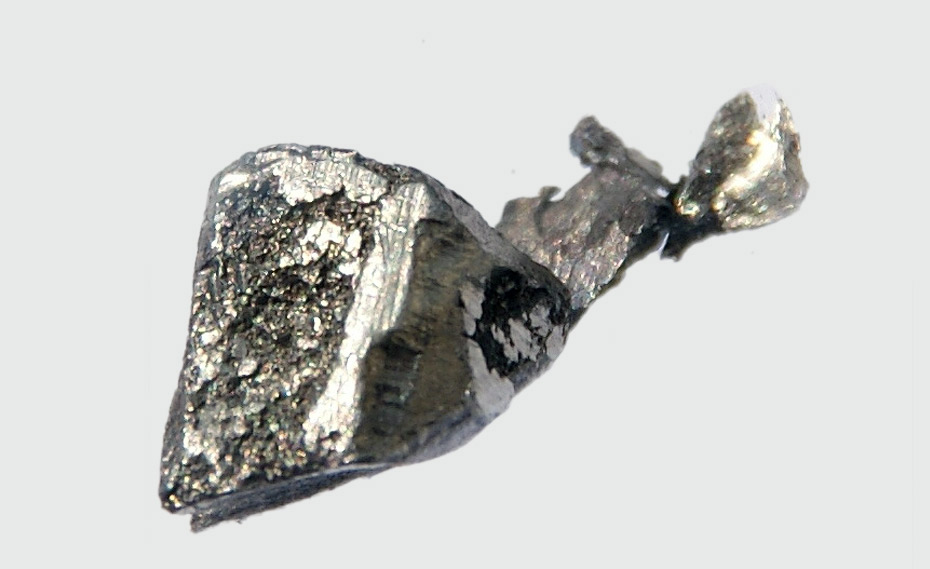

Лантан
Ланта́н (химический символ — La, от греч. λανθάνειν — скрытный, прячущийся,Lanthanum) — химический элемент 3-й группы (по устаревшей классификации — побочной подгруппы третьей группы, IIIB) шестого периода периодической системы химических элементов Д. И. Менделеева с атомным номером 57.Возглавляет семейство лантаноидов.Простое вещество лантан — блестящий редкоземельный металл серебристо-белого цвета.
Лантан как химический элемент не удавалось открыть на протяжении 36 лет. В 1803 г. 24-летний шведский химик Йёнс Якоб Берцелиус исследовал минерал, известный теперь под названием церит. В этом минерале была обнаружена иттриевая земля и ещё одна редкая земля, очень похожая на иттриевую. Её назвали цериевой. В 1826 г. Карл Мосандер исследовал цериевую землю и заключил, что она неоднородна, что в ней, помимо церия, содержится ещё один новый элемент. Доказать сложность цериевой земли Мосандеру удалось лишь в 1839 г. Он сумел выделить новый элемент, когда в его распоряжении оказалось большее количество церита.

Лантан вместе с другими РЗЭ выделяют из минералов в виде смеси оксидов, содержащей 15–30 % лантана по массе. При переработке рудных концентратов и разделении РЗЭ на подгруппы лантан выделяется вместе с Се, Рr и Nd. После отделения церия лантан очищают от других РЗЭ в основном методами экстракции или ионного обмена. Металлический лантан получают восстановлением трифторида LaF3 металлическим кальцием.
Лантан – легирующая добавка к алюминиевым, магниевым, никелевым и кобальтовым сплавам, компонент мишметалла. Оксид La2O3 применяется при изготовлении высокотемпературных сверхпроводников, а также оптических стёкол для кино- и фотоаппаратуры, астрономических приборов (лантановое стекло). Хромат LaCrO3, модифицированный Ca, Sr, Mg, используется для производства высокотемпературных электропроводящих керамических изделий; интерметаллид LaNi5 – как аккумулятор водорода; оксисульфид La2O2S и алюминат LaAlO3 – как компоненты люминофоров; монотеллурид LaTe – в термоэлектрогенераторах с высоким КПД; гексаборид LaB6 – при изготовлении автоэмиссионных катодов; трифторид LaF3 – как материал мембран для фторид-селективных электродов; некоторые соединения лантана – как компоненты катализаторов в нефтехимии.